- 介绍
- 1. 页面制作
- 2. JavaScript 程序设计
- 3. DOM 编程
-
4.
页面架构
- 4.1. CSS Reset
- 4.2. 布局解决方案
- 4.3. 响应式布局
- 4.4. 页面优化
- 4.5. 规范与模块化
- 5. 产品前端架构
- 6. 附录 A：书单
- 本书使用 GitBook 发布
版本控制
版本管理涉及团队协作，产品质量，和产品上线。使用版本控制工具可使我们自由的做的一些几点：
- 回退到任意版本
- 查看历史版本
- 对比两个版本差异
版本控制系统
版本控制系统（Version Control System）是一种记录若干文件修订记录的系统，它可以帮助开发者查阅或回档至某个历史版本。
- 手动版本控制
- LVCS 本地
- CVCS 集中式（例如 SVN）
- DVCS 分布式（例如 Git）
手动版本控制

无法有效找到需要版本和差异，污染工作目录结构。
Local VCS 本地式

于是出现了本地版本控制系统 RCS（Reversion Control System），其利用本地版本数据库存储不断出现的文件版本。 它可以迅速找出需求的版本和维持工作目录结构。其缺点是不支持协同开发，这也让开发者不将其选做通用的版本控制工具来使用。
CVCS 集中式

利用中央服务器来管理文件版本，但每一次操作都需要网络请求，且具有致命的单点故障。 （既中央服务器故障可导致，无法协同工作或数据丢失）
DVCS 分布式

分布式指的是每一份本地仓库都是一个完整的项目历史拷贝，即使一份仓库丢失或者损坏也可以从其他的仓库中获取此项目的完整历史记录。 也因为在添加新版本不需要网络，这可以使操作流程。
分支模型
如果多人并行在一条线上开发会导致开发困难并且难以定位错误位置。

分支，就是从目标仓库获得一份项目拷贝，每条分支都具有和原仓库功能一样的开发线。
分支模型（Branching Model）或称之为工作流（Workflow），它是一个围绕项目 开发、部署、测试等工作流的分支操作（创建及合并等）的规范集合。
产品级开发分支模型
常驻分支
- development，从 master 创建
- production（master），默认分支可用于发布的代码
活动分支
- feature，从 development，创建其为特性分支
- hotfix，从 master 创建，用于修复 Bug
- release，从 development 创建

环境

- 开发环境，使用测试开发配置（数据库，缓存，元数据配置）
- 使用提交到下一个 release 的特性分支
- 测试环境，使用测试配置（测试数据库）
- 使用 release/development
- 预发布环境，小范围发布使用线上数据库模拟真实环境
- 使用 release
- 生产环境，线上配置
- 使用 master
Git
Git 是一个免费开源的分布式版本控制系统，它也一个基于内容寻址的存储系统。 Git 是由 Linux 的创造者 Linus Torvalds。
优势
- 速度快，不依赖网络
- 完全分布式
- 轻量级分支操作
- Git 为行业标准版本控制供给
- 活跃和成熟的社区
安装
Mac OS X 下使用 brew install git 下载更新既可。
Linux Ubuntu 下可使用 apt-get install git 既可。
Git 介绍
Git 命令
常用 Git 命令，当在命令行中键入 git 可以便可以在帮助信息中看到。

获取帮助
git help <command> git <command> -h git <command> --help 还有
man git-<command> 均可查询某个命令的帮助文档。
基本操作
配置 Git 使用 git config 此为创建 Git 仓库前必须完成的配置。
git config --global user.name "Li Xinyang"
git config --global user.email "lixinyang1026@gmail.com"
- --local 默认 具有最高优先级 只影响本仓库
.git/config - --global 中级优先级 影响到所有当前用户的仓库
~/.gitconfig - --system 最低优先级 影响到全系统的仓库
/etc/gitconfig
初始化仓库
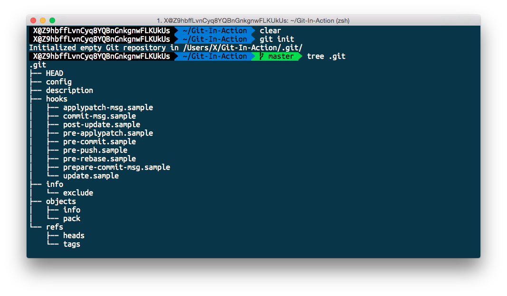
初始化仓库，使用 git status 可以查询当前仓库的状态。
如在未初始化仓库时查询状态会报出错误信息。
git init [path]
git init [path] --bare
在初始化仓库后会出现一个隐藏的目录 .git
其中包括了所有的当前仓库的版本信息和本地设置文件(.git/config)。
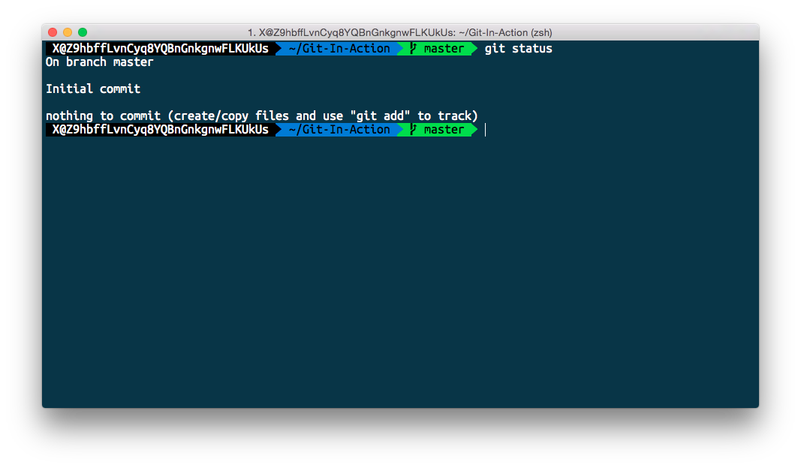
查询状态
git status 此命令可以帮助开发者在下面三对关系中找出文件状态的变化。
- 未跟踪 <--> 跟踪
- 工作目录 <--> 暂存区
- 暂存区 <--> 最新提交
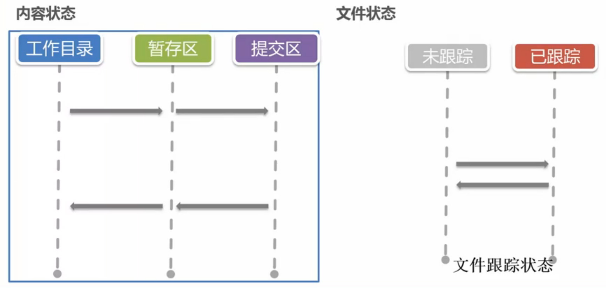
Git 中存在两种状态内容状态和文件状态。 仓库中的文件均可以在状态和区域之间进行转换。

添加文件到暂存区（同时跟踪文件）
git add [file]

上图所示，我们将 README.md 文件从工作区提交至暂存区，
并将文件状态从未跟踪改变成已跟踪。
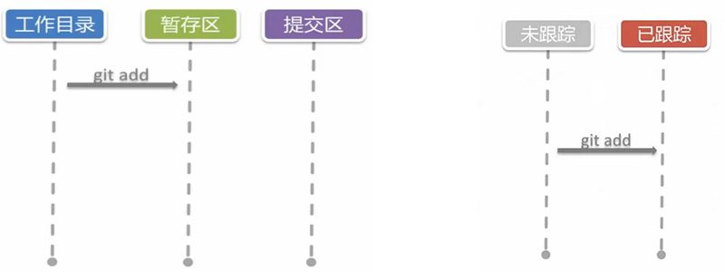
NOTE：批量增加当前目录下全部文件 git add .
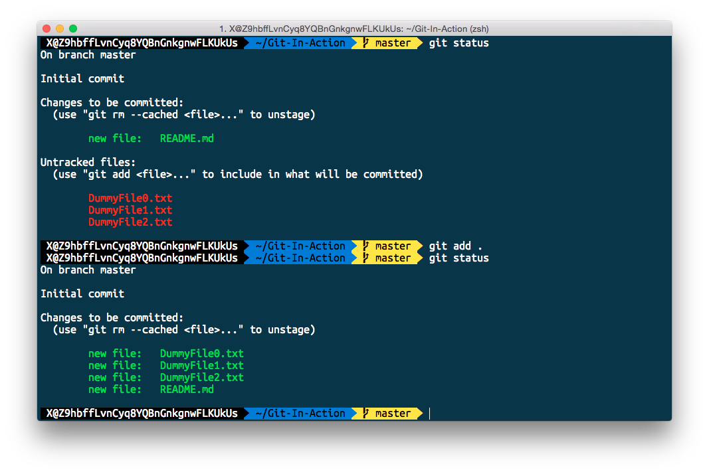
忽略文件
.gitignore 可以在添加至仓库时忽略匹配的文件，但仅作用于未跟踪的文件。
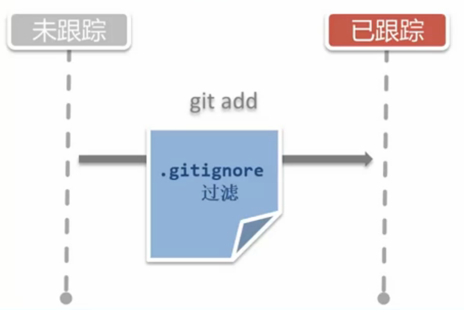
NOTE：GitHub 为各个类型项目和操作系统提供了忽略文件模板， 可以在这里找到。
暂存区删除文件
使用 git rm 可以做到从暂存区删除文件，下面提供几种常用的使用方法：
git rm --cached仅存暂存区删除git rm才暂存区和工作区目录中删除git rm $(git ls-files --deleted)删除所有被跟踪但在工作区已经被删除的文件
NOTE：git-ls-files
- Show information about files in the index and the working tree
工作区与暂存区
不同的区域中可以存在文件的独立版本，如下图所示工作区和暂存区的文件为两个不同的版本。
（之前上个例子中所创建的 DummyFile 文件已被删除）
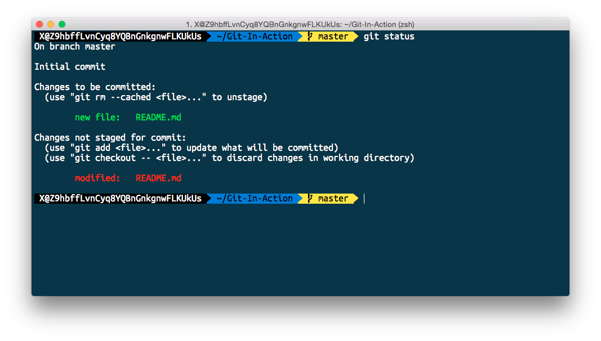
暂存区
我们可以把暂存区比作一个每类物品只能放置一次的购物车此外还具有下面的特质：
- 货架和购物车可同时出现同种物品
- 货架上的物品可以替换掉购物车的物品
- 可以删除物品
- 提交购物车完成购买并生成购买记录
其中
- 物品：文件
- 货架：工作目录
- 购物车：暂存区
- 购买：提交内容
提交版本记录

git commit 可以根据暂存区的内容创建一个提交目录。
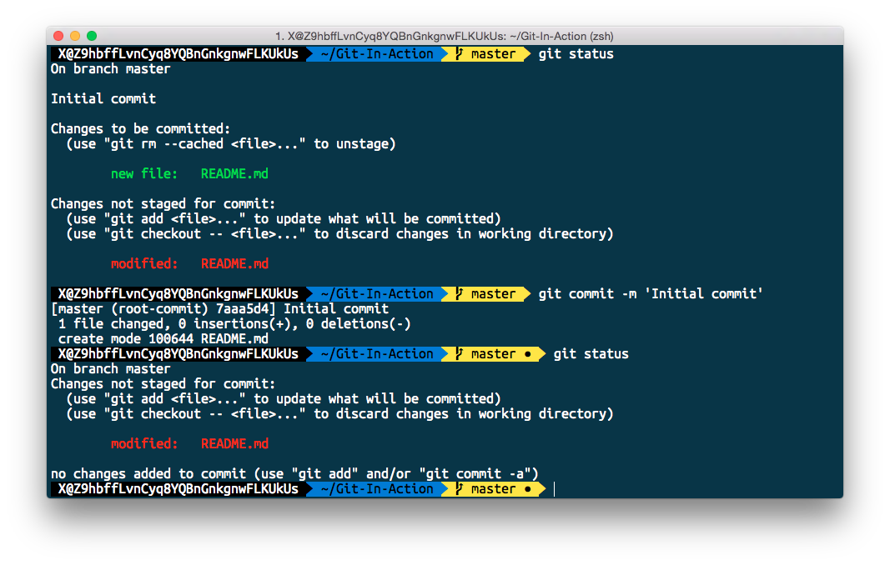
NOTE：直接提交工作区的内容git commit -a -m 'message'，工作中不建议这样操作。
查询提交历史记录
git log 可以用来显示提交是记录信息。

其中包括：
- 提交编号 SHA-1 编码的 HASH 标示符
- git-config 配置的提交者信息
- 提交日期
- 提交描述信息
工作中可使用下面简单的配置进行版本查询
git log --oneline
# 较长的命令可以使用 alias 的方法简化
git log --color --graph --pretty=format:'%Cred%h%Creset -%C(yellow)%d%Creset %s %Cgreen(%cr) %C(bold blue)<%an>%Creset' --abbrev-commit
Git 中 alias 命令设置
配置 Git 中别名的方法 git config alias.shortname <fullcommand>。
git config --global alias.lg "log --color --graph --pretty=format:'%Cred%h%Creset -%C(yellow)%d%Creset %s %Cgreen(%cr) %C(bold blue)<%an>%Creset' --abbrev-commit"
git lg
NOTE：如果你使用 Mac OS X 可以尝试使用 Oh My Zsh 其中已经预先设置好了非常多常用别名。
显示版本差异
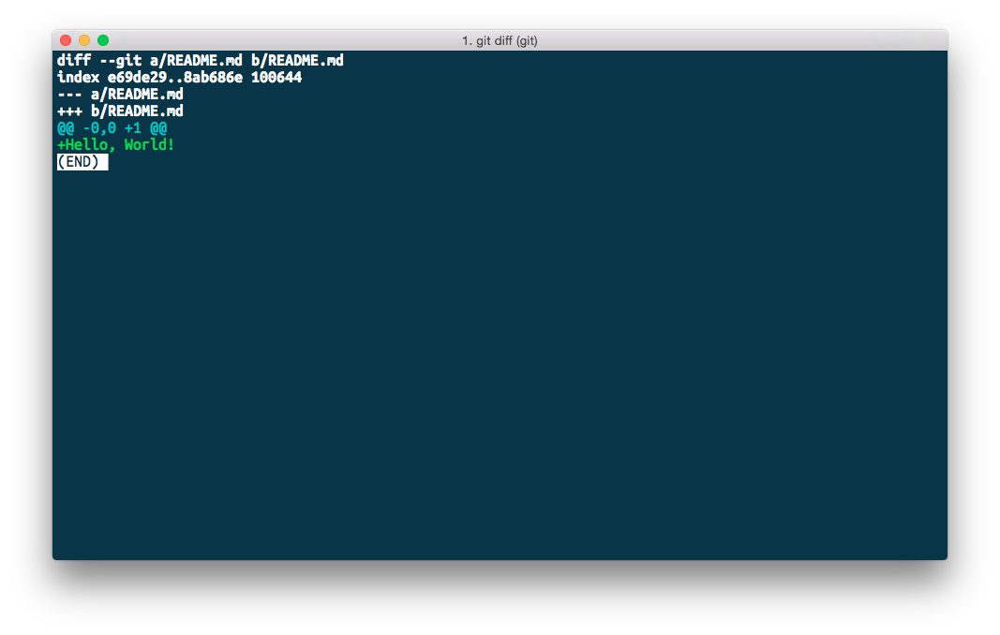
git diff 用于显示版本差异，下面是几个常用的方法：
git diff显示工作目录与暂存区的差异git diff -cached [<reference>]暂存区与某次提交的差异（默认为 HEAD）git diff <reference>工作目录和某次提交间的差异git diff <reference> <reference>查询两次提交直接的差别

撤销工作区的修改

git checkout -- <file>... 可用于撤销工作区的修改
（此方法会丢弃工作区修改且不可恢复），下面是一些常用方法：
git checkout -- <file>将文件从暂存区复制到工作目录

NOTE：使用 -- 是为了避免路径和引用（或提交 ID）同名发生的冲突。
撤销暂存区内容

使用 git reset HEAD <file>... 可用于撤销暂存区的修改，下面是一些常用操作：
git reset HEAD <file>将文件内容存上次提交复制到暂存区。

撤销全部修改

git checkout HEAD -- <file> 可以直接将内容从上次的提交复制到工作区。
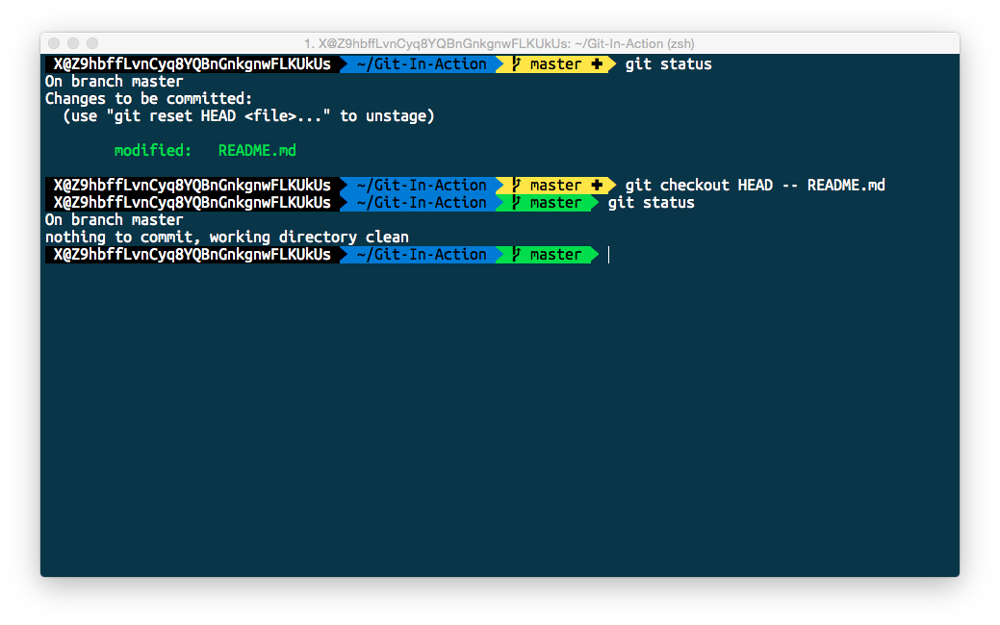
命令总结

分支操作
git branch
使用 git branch 可以对仓库分支进行增删查改的操作，下面列举了一下常用的操作方式：
git branch <branchname>，创建指定分支git branch -d <branchname>，删除指定分支git branch -v，显示所有分支信息
一份分支的引用只是一个文本文件，里面只有一个 SHA 编码。它保存于
.get/refs/heads/master中。—— 郑海波 网易工程师
git branch next

git commit -m 'message'
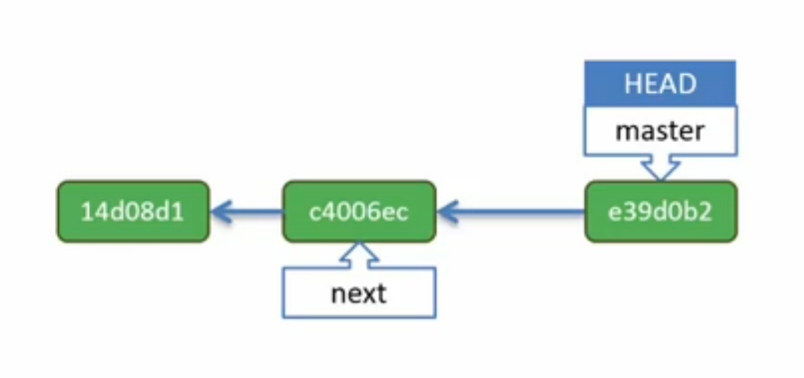
切换至目标分支
git checkout 它可以本枝上根据通过移动 HEAD（指向当前的提交） 检测出版本，
也可用于切换分支。（其会把当前的工作目录和暂存区移动到提出分支的版本）
常用命令有：
git checkout <branchname>，使指针指向目标分支git checkout -b <branchname>，创建目标分支并切换分支git checkout <reference>，可以指向任何一个版本
git checkout next
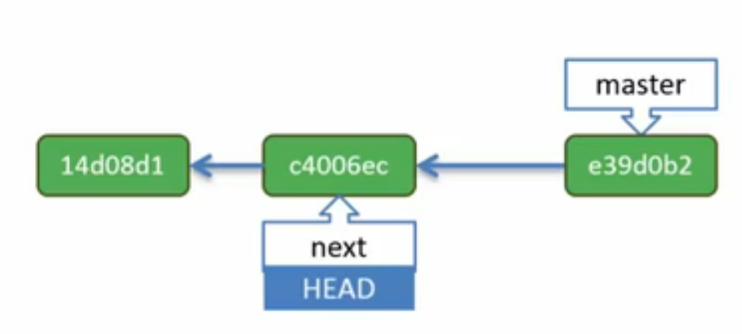
NOTE：所有提交是更具 HEAD 向前进的，所以前后分支后则会跟着 Next 分支进行开发。
git commit -m 'message'

# -- 为短名与 cd 类似
git checkout --
# 或者使用
# git checkout master

git checkout -b Issue-26
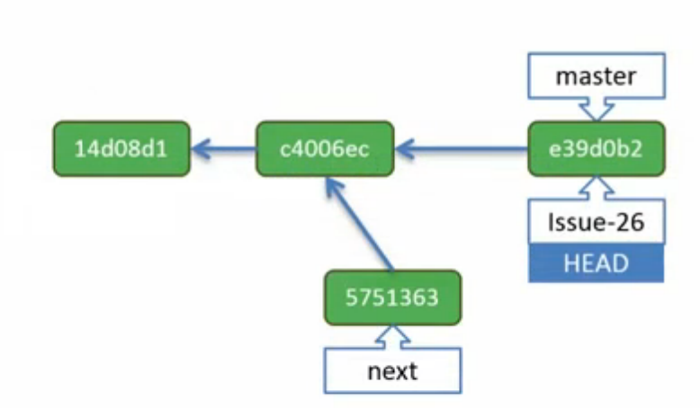
NOTE：使用 git branch -v 可以列出全部分支，带 *
表示当前所属分支（HEAD 指向分支）。
git checkout c4006ec
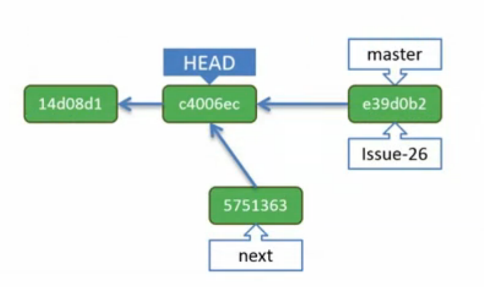
当 HEAD 指针与具体的分支分离时，我们将其称之为 detached head。
如果 HEAD 在分离状态则因尽量避免在此状态下进行提交，只做内容的查看。

完全回退
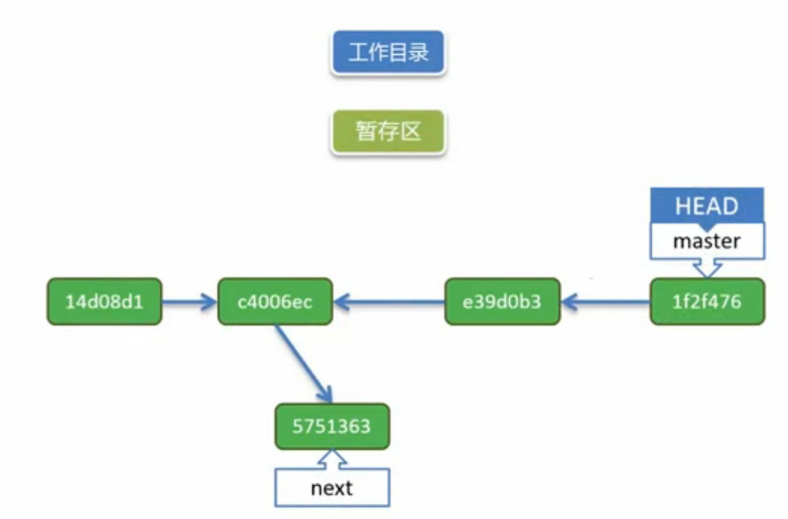
使用git reset可以将当前分支回退到历史中的某个版本，
下面为常用的三种方式（三种的区别是恢复的内容时候同时会恢复的工作区或暂存区）：
git reset --mixed <commit>默认方式，内容存入暂存区git reset --soft <commit>内容存入暂存区和工作区git reset --hard <commit>暂存区和工作区保留现有状态
git reset --mixed e390b3

如果上一个命令如果使用 hard
git reset --hard e390b3

如果上一个命令如果使用 hard
get reset --soft e390b3
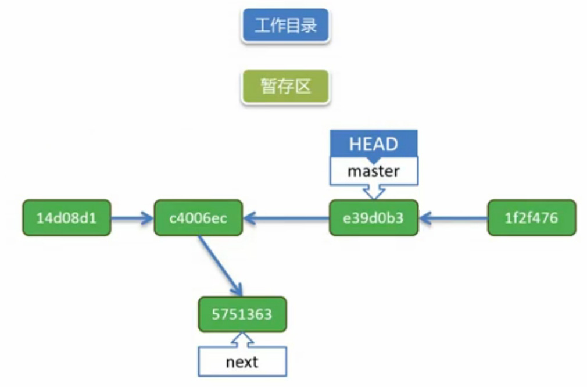
此方法暂存区和工作目录不会发生任何变化仅仅只是 HEAD 指针发生了变化， 但原有的提交已经无指针指向成为无索引的提交其就有可能被回收。
查询所有提交记录
git reflog 会根据仓库的提交顺序按顺序来排列，其中包括无索引的提交，
可以在这里使用 HASH 值来进行，但是无索引的提交可能会丢失。
使用捷径
A^ 表示 A上的父提交，多个 ^ 可表示以上的多个级别。
A~n 则表示在 A 之前的第 n 次提交。
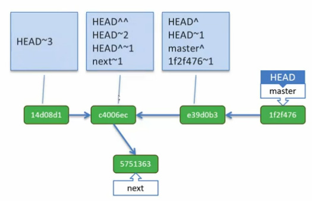
reset 与 checkout 区别
两种方法都有两个作用范围，一个是分支操作（commit 操作）， 另一个是文件操作（file 操作）。
| 命令 | 范例 | 移动 HEAD/Branch | 注释 |
|---|---|---|---|
git reset [commit] |
git reset HEAD^ --soft |
是/是 | 完全回退到某个提交（之前所在的位置将失去索） |
git reset [file] |
git reset README.md |
否/否 | 恢复暂存区到某个提交状态（不移动指针） |
git checkout [commit] |
git checkout master |
是/否 | 移动当前指针 HEAD 到某个提交（并复制内容到工作目录） |
git checkout [file] |
git checkout -- README.md git checkout HEAD -- xx.log |
否/否 | 恢复工作目录到某个状态 |
stash 的作用
git checkout next
# error: Your local change to the following files whould be overwritten by checkout:
# README.md
# Please, commit your changes or stash them before you can switch branches.
# Aborting...
突然需要切换到其他分支，工作区和暂存区还有在当前分支没完成的任务。那么 stash 就使用 .git 中的特殊区（Stash 区）来帮你解决这个问题（因为强切回丢失当前的工作区和暂存区的内容）。


stash 可以把当前工作区和暂存区的状态以栈（Stack）的形式保存起来（每次保存都会推一个内容到 stash 栈中），并返回一个干净的工作空间（工作区和暂存区）。
NOTE：stash pop = stash apply + stash drop 类似于 JavaScript 中的 pop 操作。
NOTE+：什么是栈？可以把栈想象成一摞盘子堆（一个叠一个）。具体关于堆栈的信息可以在这里找到。如果还看不懂，建议完成哈佛大学在线计算机入门课程 CS50，可以在这里找到。
merge

使用 git merge 可用于合并分支。下面的例子是将 next 分支合并到 master 分支中去。


解决 merge 冲突
当一个文件被同时修改时（更多情况为同时修改相同的一行代码时）则极有可能产生合并冲突。
git merge next master
# Autom-merging README.md
# CONFLICT (content): Merge confilict in README.md
# Automatic merge failed; fix confilict and then commit the result
git status
# On branch master
# You have unmerged paths.
# (fix confilict and run 'git commit')
# ...
# both:modified: README.md
# no changes added to commit (use "git add" and/or "git commit -a")

在解决完合并冲突后可以使用 git add . 然后 git commit -m 'resove merge confilict' 来完成合并冲突解决并提交一个新的版本。
NOTE：git cat-file -p HEAD 可用于显示 git 中某个对象的具体信息。
NOTE+：<<<<<<<< HEAD 与 ========= 之间为 HEAD 所在的内容。
merge fast-forward
也并不是所有的合并操作都会造成合并从图（merge confilic)。最简单的一种合并是 fast-forward 仅仅只是变化 HEAD 指向的位置（不产生新的合并节点）。

如果需要生成新的合并节点可以使用 git merge next --no-ff 意思是合并但不使用 fast-forward。

merge 不足

当参与的人阅读分支越多其分支结构就越复杂和难以被理解。如何实现在任何状态下的线性提交？
如需完成线性提交可以使用 git rebase，其可以修剪提交历史的基线。它会将不同分支的提交在所选节点上进行重演（重演并重新创造新节点）这里 HEAD/Branch 均会发生移动。
git rebase master

但有时并不需要将其他分支上的全部提交节点统统进行重演。则可以使用 git rebase --onto 来选择需要重演的提交节点。
git rebase --onto master 5751363

NOTE：上面的红色的节点，未被重建（被丢弃）。
rebase 与 merge 区别

rebase 会产生线性的提交历史，merge 则会产生多个不同分支的合并节点。所以具体没有好坏之分，可根据使用的需求来决定。
注意！不要在共有分支上使用 rebase（例如 master 分支）这会导致其他开发者在进行拉取（Pull）时，必须进行合并且合并中包含重复的提交。
tag
不论是 Branch 还是 HEAD 它们均为动态指针，如果想定义一个静止的标示则可以使用 git tag ，它将给发布的提交版本设置一个别名。在设置了标签后就可以直接使用标签名来代替它所指代的版本提交了。
git tag v0.1 e39d9b2
git checkout v0.1

远程操作
远程操作可以将本地仓库推送至远程仓库服务器。Git 支持许多主流的通信协议，其中包括 Local、HTTP、SSH、还有Git。服务器只应该是作为同步之用（被动接受既可）。
初始化一个本地的远程服务器
git init ~/git-server --bare

推送
git push 可以将当期的全部版本提交提交推送至远程仓库，其完成了提交历史的完全不复制并同时移动复制版本的 HEAD 与 Branch。

添加远程仓库别名
git remote 可用于添加远程仓库的别名。

# 更改仓库 url 地址
git remote set-url origin 'https://github.com/li-xinyang/FEND_Note.git'
远程 push 冲突
可以先使用 git fetch + git merge 来解决冲突的问题。git pull 就等同于 fetch 与 merge 的合并。
克隆远程仓库
使用 git clone 可以克隆远程仓库，并将克隆地址默认设为 origin。